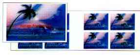
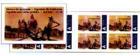
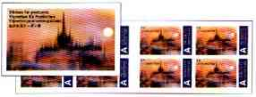
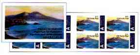
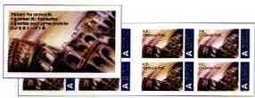

Greetings from
Italy!
A new service of the Swiss Post was
announced in the January issue of the Swiss Postal Service magazine "La Loupe".
The name of the service is Cartolina and it is proposed by a new unit named Swiss Post
International.
It functions in watering places in ... Italy, and promises to dispatch
standard postcards very fast (one to two days for the whole Europe), which can be
considered a very good performance from there. The correspondence is serviced for
the whole world as first class mail, but only when special stickers (see below) are
used and when the postcards are put in special collection boxes and drop-off points of the
Swiss Post International.
The stickers are sold in booklets of 8 pieces, for the price of Swiss
Francs 8.00 (about $5.50). They were designed by the Swiss artist Stefan Beutler, from
Biel/Bienne. Each sticker displays the text: P.P., CH-Swiss Post, and
A-Priority/Prioritaire.
 |
 |
 |
 |
 |
Top - down and from left to
right:
Palm, Venice, Milan, Naples, Rome |
A new and interesting
field (Swiss post abroad) for stamps collectors, I believe. Next summer I will display on
this place a postcard that I will send to myself from Italy the day of my departure from
there. Will I get it no later then after two days? Knowing from own experience the quality
of the Swiss postal service, I have no doubts.
Note. Unfortunately I couldn't
find the special collection boxes or the drop-off points of the Swiss Post International
in Lido di Jesolo, a quite big place, situated near Venice. Was I out of luck there?
|
|
|